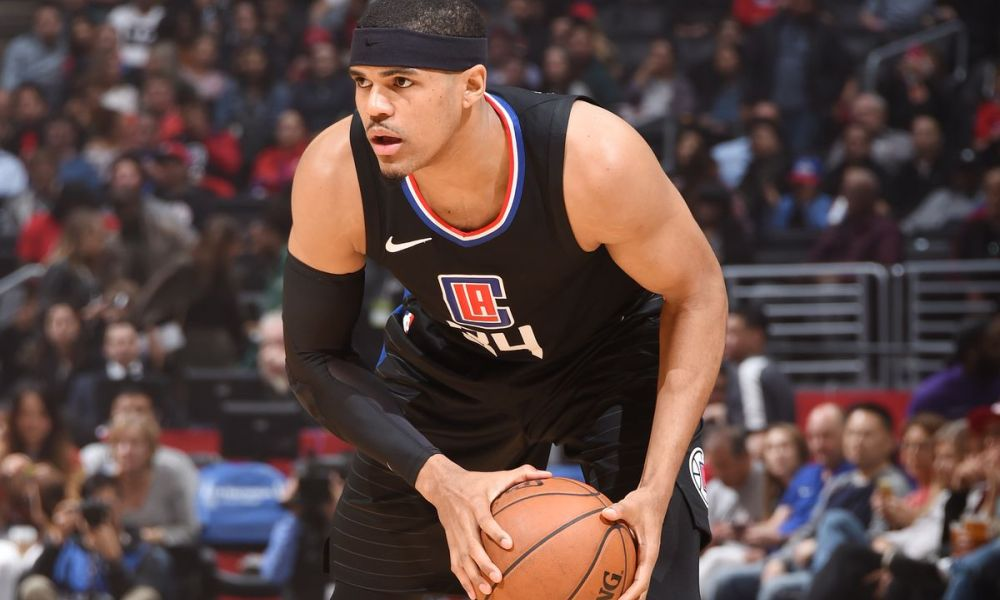

Game 1: Houston Rockets at Indiana Pacers
My Pick:
Houston Rockets
Why I'm Rolling with them:
The Rockets have looked better since getting James Harden back, and I think their guards now match up well with every team in the league not named Golden State (even there it's pretty close). Their defense has still not been ideal, and I have no doubt that this Indiana team will give them a lot of trouble tonight. Oladipo played fantastic down the stretch in against Boston two nights ago, hitting the game winner then getting a steal to seal the victory. In addition, Sabonis has been playing very well too, causing Indiana to have a top notch bench. But Houston's starters have the advantage, and win this one 118-112.
Game 2: Cleveland Cavaliers at Orlando Magic
My Pick:
Orlando Magic
Why I'm Rolling with them:
Orlando stole one off of the Spurs last night, behind a 26 point performance from Aaron Gordon. I'm thinking he's going to have another good game today, since the Cavs interior is relatively weak. Cleveland has been extremely dysfunctional lately, and while I don't expect their players to purposefully throw a game, I do think that they're not going to be 100% compared to normal. JR won't get minutes, Korver is also operating on not many minutes. This is a great game for Orlando to come out and snag from this depleted Cleveland team. Orlando takes it, 119-102.
Game 3: Miami Heat at Detroit Pistons
My Pick:
Detroit Pistons
Why I'm Rolling with them:
Dragic is back in the lineup for the Heat tonight, however Whiteside is out. This bodes well for the Pistons, who can abuse that lack of rim protection to allow Drummond and Griffin to absolutely swallow all the rebounds. Griffin is still playing well to start the year, and although Drummond has looked a little rough against Embiid, that can be expected. Having Dragic back should help the Heat, who really struggle without a creator. In the end, Detroit's frontcourt is just too strong and I have no doubt that they'll be able to pull out the win 116-108.
Having Dragic back will help the Heat tonightGame 4: Chicago Bulls at New York Knicks
My Pick:
New York Knicks
Why I'm Rolling with them:
This was a tough one for me to call, as both of these teams seem to be elusive for me to judge. The Knicks had been playing very well against bad teams, before their brutal loss to the Wizards yesterday. The Bulls have been losing a whole bunch of very close games, but just can't seem to execute down the stretch. Depending on what version of either team we see, this could go either way. I'm taking New York because I think their guard rotation is just a little stronger, without sacrificing too much in the paint. Knicks take it, 109-104.
Game 5: New Orleans Pelicans at Oklahoma City Thunder
My Pick:
Oklahoma City Thunder
Why I'm Rolling with them:
The Pelicans are a good team, with a very good inside presence. However, OKC is consistently a strong rebounding team and I have faith that they're going to win tonight. Their defense has looked a lot better compared to the start of the season, and Ferguson seems to have somewhat exited his slump. Since their loss to Boston, Westbrook hasn't been shooting as many threes, and grabbing fewer rebounds. This allows Adams to grab the boards, and it seems to be working for them as the Thunder are 4-0 since said game. Oklahoma takes this one, 118-110.
How the Thunder deal with Davis will be very importantGame 6: Boston Celtics at Denver Nuggets
My Pick:
Denver Nuggets
Why I'm Rolling with them:
Watching Jokic operate is a thing of beauty. Even in a game where he only got 7 points, putting up 16 assists in a win over the Jazz cements that he's the best passing big man in the league right now. The Celtics play well against offensively gifted big men, however Jokic's ability to pass out of tough situations allows him to easily counter a lot of what Boston will throw at him. That said, this game is a toss up for me. I like the wing rotation of Boston better, especially with Denver's 3pt% being in a big slump. However, Denver's altitude will give them an advantage at home (I really like the Denver altitude as a decision maker). Denver wins a high scoring game, 125-117.
Game 7: Toronto Raptors at Utah Jazz
My Pick:
Toronto Raptors
Why I'm Rolling with them:
The Raptors just dominated the Lakers without Kawhi yesterday. Kyle Lowry has broken a franchise record for the most 10+ assist games in a row, and Serge Ibaka looks like he's back in 2012 during OKC's finals run. Donovan Mitchell is still out for the Jazz, which is why I think the Raptors should have a pretty easy time against this Jazz team missing their biggest creator. Rubio is a pretty good point guard defender, but having Kawhi to cover Ingles, and Lowry on Rubio should be enough to severely limit the Jazz's ability to score. Toronto's defense is stifling so far, and their offense, led through Lowry has been incredible so far. Raptors should win this easily, 119-108.
Game 8: Memphis Grizzlies at Golden State Warriors
My Pick:
Golden State Warriors
Why I'm Rolling with them:
Memphis played last night, losing to the Suns in a tough game that saw Booker hit a game winner with 1.7 seconds left. This Warriors team is a lot better than the Suns. The issue with the Warriors at this point is that I've run out of ways to say they can dominate any team on any night, and as such feel like there's nothing left to talk about. Gasol should have a mismatch in the paint, and Conley has been a decent defender before his injury. This may be enough to slow the Warriors, but not enough to stop them. Warriors win 124-111.
Game 9: Minnesota Timberwolves at Los Angeles Clippers
My Pick:
Los Angeles Clippers
Why I'm Rolling with them:
Butler didn't play yesterday against Portland, which is why I think he'll be playing tonight. Even with that, I still think this Clippers team has what it takes to beat Minnesota. I really like SGA and Lou as the bench guards, and they've been playing very well to start the year. Tobias Harris is going to be able to abuse Taj Gibson and get his points tonight. The interesting matchup for me will be at center, I think the Clippers have possibly the worst starting center in the league in Gortat. If KAT can take advantage of that, Minnesota could easily take it. But I'm gonna bank on the Clippers adjusting, and winning 114-112.
 Tobias Harris has been leading this Clippers team